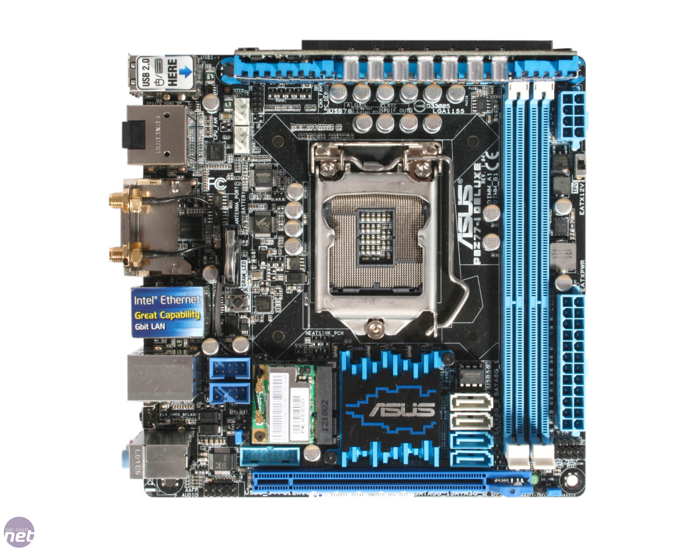

La scheda mini-ITX è un formato di scheda madre a basso consumo (17x17cm) sviluppato da VIA Technologies. La scheda mini-ATX è leggermente più piccola della scheda micro-ATX e spesso è raffreddata passivamente (senza ventole) grazie ai bassi consumi, della scheda e del processore utilizzato. Questo lo rende appetibile per sistemi home theather, o dovunque i bassi consumi e la silenzionistà siano molto importanti. Ormai questo formato di scheda madre è diventato uno standard, infatti la scelta è già molto ampia. Attualmente il mercato offre molte schede che supportano i processori delle maggior case produttrici: VIA, Intel e AMD.
